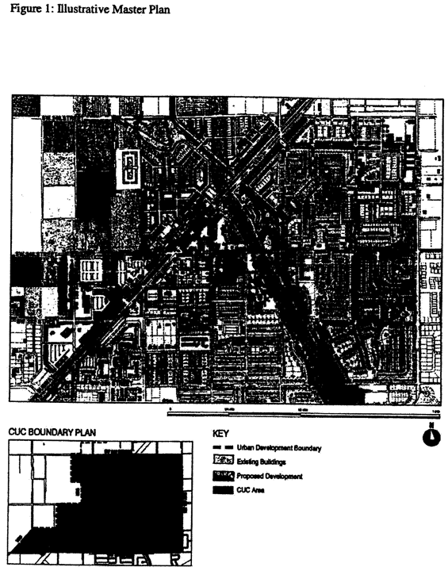
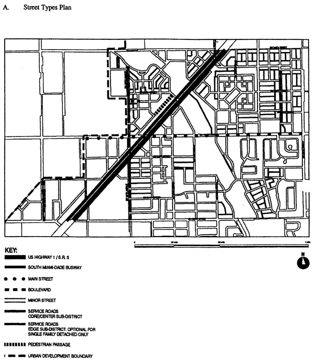

Sec. 33-284.98 Purpose, intent and applicability.
Sec. 33-284.99. Princeton Community Urban Center District (PCUC) Requirements.
Sec. 33-284.99.2. The Regulating Plans.
Sec. 33-284.99.3. Building Placement and Street Type Development Parameters.
Sec. 33-284.99.4. Conflicts with other Chapters and Regulations.
Sec. 33-284.99.5. Non-conforming Structures, Uses, and Occupancies.
Sec. 33-284.98
A.
The regulations contained in this chapter and Chapter 18A, Landscape Code, Code of Miami-Dade County, Florida, shall apply to this article, except as otherwise added to or modified herein.
B.
The Illustrative Master Plan (Figure 1), illustrates the citizens' vision and may be used to interpret this article. Where the Illustrative Master Plan conflicts with the text of this article, the text shall govern.
C.
The boundaries shown in Figure 1 shall constitute the Princeton Community Urban Center Boundary Plan and are generally described as follows: from the northwest corner of the intersection of SW 256 Street and SW 127 Avenue, then north along the west side of SW 127 Avenue to the south side of SW 240 Street, then west along the south side of SW 240 Street to the Urban Development Boundary (UDB) line, as of the effective date of this ordinance, then south, east and west along the UDB to the north side of SW 256 Street, then east along the north side of SW 256 Street to the west side of SW 127 Avenue. The exact location of the UDB line as of the effective date of this ordinance (July 17, 2005) is on file with the Department of Planning and Zoning. An approximate delineation of the UDB line is depicted in the Illustrative Master Plan and in the Regulating Plans.
A more detailed legal description of the boundaries follows:
Beginning at the centerline of the intersection of SW 127th Avenue and SW 256th Street of section 26-56-39, thence North, along the centerline of SW 127th avenue to the intersection with the centerline of SW 240th Street, thence west along the centerline of SW 240 Street to the intersection with the centerline of SW 137 AVE the (UDB). Thence continue west along the centerline of SW 240 Street for 542' + to a point (theoretical UDB). Thence on an assumed bearing S00-44-41W for 1440' + to a point. Thence N89-26-32E for 542' + to the centerline of SW 137 AVE. Thence south along the centerline of SE 137 AVE to the intersection with the centerline of SW 248 Street. Thence west along centerline of SW 248 Street to the intersection with the centerline of SW 139 AVE. Thence south along the centerline of SW 139 AVE to the intersection with the centerline of SW 252 Street. Thence west along the centerline of SW 252 Street to the intersection with the centerline of SW 142 AVE. Thence on an assumed bearing S41-03-51W for approximately 1737' + to the centerline of the intersection of SW 256 Street. Thence east along the centerline of SW 256 Street for 1563' + to the intersection with the Centerline of Packing House Road. Thence on an assumed bearing S50-44-50E for approximately 371.65' + to the centerline of State Hwy # 5. Thence NE/ly along the centerline of the State HWY # 5 for 334.99 + to a point. Thence east for 427.30 + to the centerline of SW 139 Ave. Thence east along the centerline of SW 256 ST to the point of beginning. (The intersection with the centerline of SW 127 AVE).
D.
Full scale maps of the Illustrative Master Plan presented in Figure 1, as well as all the Regulating Plans and Street Development Parameters figures in this article, are on file with the Miami-Dade Department of Planning and Zoning.
E.
No provision in this article shall be applicable to any property lying outside the boundaries of the Princeton Community Urban Center District (PCUC) as described herein. No property lying within the boundaries of the PCUC shall be entitled to the uses or subject to the regulations provided in this article until an application for a district boundary change to PCUC has been heard and approved in accordance with the provisions of this chapter.

Figure 1: Illustrative Master Plan
(Ord. No. 05-146, § 1, 7-7-05)
Sec. 33-284.99.
Except as provided herein, all developments within the PCUC shall comply with the requirements provided in Article XXXIII(K), Standard Urban Center District Regulations, of this code.
(Ord. No. 05-146, § 2, 7-7-05)
Except as provided herein, all permitted, conditionally permitted, and temporary uses within the PCUC shall comply with Section 33-284.83 of this code,
A.
Permitted Uses. The following uses shall be permitted.
1.
On the west side of South Dade Busway right-of-way, Industrial (ID) lots abutting designated Mixed Use Corridor (MC) lots on at least one side, may have uses permitted in the MC area for a depth not to exceed 300 feet, as measured from the Busway right-of-way.
2.
In the Industrial District (ID) area, all uses permitted in the IU-2 zoning district after public hearing pursuant to Section 33-311(A)(3) of this code.
3.
The following uses in the Marketplace Special District (SD) area:
a.
outdoor produce markets
b.
all uses permitted in the IU-1 zoning district
c.
in the Core and Center Sub-districts only, on lots fronting on SW 244 Street or SW 137 Avenue, all uses permitted in the Arts District (AD)
4.
The following uses in the Arts District (AD) area:
a.
live-work buildings, only along A-Streets and with the following uses:
(1)
for the residential area: multiple family apartment units when vertically integrated with other lawful uses in work space area
(2)
for the work space area:
(i)
all uses permitted in the workshop portion of a live-work unit in the ID area
(ii)
arts and crafts stores
(iii)
caterers
(iv)
drugstores
(v)
food preparation
(vi)
furniture manufacturing and refinishing
(vii)
hardware stores
(viii)
hotels/motels
(ix)
labs
(x)
micro-breweries
(xi)
movie theaters, excluding drive-in theaters
(xii)
police substations
(xiii)
post office substations
(xiv)
other similar uses that promote the arts and handcrafts as approved by the Director
b.
uses permitted in the Industrial District (ID) area.
c.
when contiguous to a property located in the Marketplace Special District (SD) that is under the same ownership, all uses permitted in the SD District.
5.
The following uses in the Utilities District (UD) area:
a.
all uses permitted in the GU zoning district, excluding residences and permanent storage.
B.
Conditionally Permitted Uses. An entertainment center shall be permitted after public hearing pursuant to Section 33-311(A)(3) of this code, provided that the following conditions are also satisfied:
1.
The site contains a minimum of 5 net acres and a maximum of 20 net acres.
2.
A landscaped buffer of 25 feet is provided along all property lines, allowing only access and egress therein, except that facilities with frontages along SW 244 Street and US 1/Busway shall comply with the Building Placement and Design Parameters.
3.
All buildings are setback a minimum of 30 feet from all property lines except along SW 244 Street.
(Ord. No. 05-146, § 3, 7-7-05)
Sec. 33-284.99.2.
The Regulating Plans shall consist of the following controlling plans, as defined and graphically depicted in this section.
A.
The Street Types Plan, which establishes a hierarchy of street types in existing and future locations. The five Street Types and the hierarchy of streets (from most important to least important in accommodating all types of activity) are U.S. 1, Main Street, Boulevard, Minor Street, and Service Road.
B.
The Sub-districts Plan, which delineates 3 Sub-districts: Core, Center and Edge. These Sub-districts shall regulate the allowable intensity of development in accordance with the Comprehensive Development Master Plan and this article.
C.
The Land Use Plan, which delineates the areas where specified land uses and development of various types and intensities shall be permitted.
D.
The Building Heights Plan, which establishes the minimum and maximum allowable number of stories.
E.
The Designated Open Space Plan, which designates open spaces. The designated open spaces shall be controlled by anchor points.
F.
The New Streets Plan, which shows the location and the number of new streets needed to create the prescribed network of streets within each Urban Center District. All new A streets shall be required in the same general location as shown on the New Streets Plan. All B streets shall be located as provided in Section 33-284.86(F) of this code.
G.
The Bike Route Plan, which depicts the designated bike routes, including the bike facility requirements if any, which shall be shown in all development plans.

Street Types Plan
Sub-Districts Plan
Land Use Plan
Building Heights Plan
Designated Open Space Plan
New Street Dedications Plan
Bike Route Plan
(Ord. No. 05-146, § 4, 7-7-05; Ord. No. 07-96, § 3, 7-10-07)
Sec. 33-284.99.3.
A.
All new development and redevelopment within the PCUC shall comply with the Building Placement and Design Parameters as provided in Section 33-284.85 of this code.
B.
All new development and redevelopment within the PCUC shall comply with the Street Type Parameters as provided herein:
| Street type | Minimum Required Configuration | |
| Core/Center | Edge | |
| U.S. 1 | As provided in this section | |
| Main Street | As provided in this section | |
| Boulevard | Street type 1, parking both sides | Street type 1 or 2 |
| Minor Street | Street type 4, parking one side | Street type 4 or 5 |
| Service Road | As provided in Section 33-284.85 | |
| Pedestrian Passage | As provided in Section 33-284.85 | |
C.
Unless otherwise provided by the Building Placement and Design Parameters in Section 33-284.85 of this code, the following front and side street setbacks shall be required within the PCUC:
| Street type | Required Setback | ||
| Core | Center | Edge | |
| U.S. 1 | 6 feet | 6 feet | 10 feet |
| Main Street | 6 feet | 6 feet | 10 feet |
| Boulevard | 0 feet | 0 feet | 10 feet |
| Minor Street | 10 feet | 6 feet | 10 feet |
| Service Road | 0 feet | 0 feet | 0 feet |
| Pedestrian Passage | 0 feet | 0 feet | 10 or 15 feet |
Marketplace Special District Core/Center
U.S. 1/S.R. 5 Core/Center
U.S. 1/S.R. 5 (With Frontage Road) Center
SW 248 Street/Main Street Core/Center
SW 248 Street/Main Street Edge
(Ord. No. 05-146, § 5, 7-7-05)
Sec. 33-284.99.4.
This article shall govern in the event of conflicts with other zoning, subdivision, or landscape regulations of this code, or with the Miami-Dade Department of Public Works Manual of Public Works.
(Ord. No. 05-146, § 6, 7-7-05)
Sec. 33-284.99.5.
Nothing contained in this article shall be deemed or construed to prohibit a continuation of a legal nonconforming structure, use, or occupancy in the PCUC District that either (1) was existing as of the date of the district boundary change on the property to PCUC District or (2) on or before said date, had received final site plan approval through a public hearing pursuant to this chapter or through administrative site plan review or had a valid building permit. However, any structure, use, or occupancy in the PCUC District that is discontinued for a period of at least six months, or is superseded by a lawful structure, use, or occupancy permitted under this chapter, or that incurs damage to the roof or structure to an extent of 50 percent or more of its market value, shall be subject to Section 33-35(c) of this code. However, a lawfully existing single-family home use that is discontinued for a period of at least six months or that incurs damage to the roof or structure to an extent of 50 percent or more of its market value, shall not be subject to Section 33-35(c) of this code.
(Ord. No. 05-146, § 7, 7-7-05; Ord. No. 06-10, § 8, 1-24-06)
Editor's note—
Ord. No. 05-146, § 7, adopted July 7, 2005, amended the Code with the addition of a new section 33-284.99.4. In order to avoid duplication of section numbers, the provisions of said ordinance have been included herein as section 33-284.99.5 at the discretion of the editor.